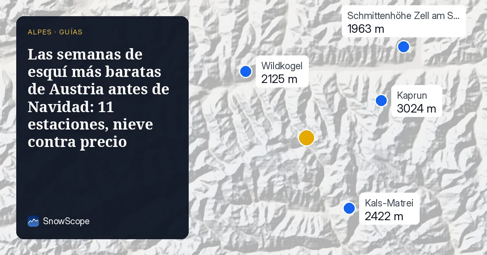

Las semanas de esquí más baratas de Austria antes de Navidad: 11 estaciones, nieve contra precio
La respuesta corta: las semanas de diciembre con mejor relación calidad-precio en Austria están en los pueblos altos, no en los glaciares. Galtür (258 EUR por 6 días hasta el 18 de diciembre) y Kühtai (269 EUR hasta el 18 de diciembre) tuvieron ambas 30 cm o más a media montaña la semana del 15 al 21 de diciembre en más del 90 % de nuestros 46 inviernos de histórico.
Consulta la previsión de nieve en tiempo real de Cheapest ski weeks in Austria before Christmas en la app SnowScopeEspesor de nieve, alertas de nieve polvo y mapa 3D, gratis.
Cómo comparamos
Tomamos 11 estaciones austriacas lo bastante altas para contar en diciembre y miramos dos cosas. Primero la nieve: la parte de inviernos con 30 cm o más a media montaña la semana del 15 al 21 de diciembre, y la misma parte para la semana de Navidad en los últimos 15 inviernos. Segundo, el forfait adulto de 6 días de la tarifa oficial de cada estación, con el precio de temporada temprana donde lo hay. Los números del mapa coinciden con la lista de abajo.

Las ganadoras: pueblos altos con temporada baja
Kühtai (2) es la campeona de nieve entre los pueblos: su remonte más bajo está a 1939 m, la media montaña tenía 30 cm a mediados de diciembre en el 98 % de los inviernos, y el forfait de 6 días en temporada baja cuesta 269 EUR hasta el 18 de diciembre. Galtür (3) es la semana más barata de la lista, 258 EUR hasta el 18 de diciembre, con el 93 % de inviernos a 30 cm a media montaña.
Obertauern (1) es más grande y más cara, 331 EUR por 6 días hasta el 25 de diciembre, con el 80 % de inviernos a 30 cm a mitad de mes. Las tres comparten la misma ventaja: se esquía desde la puerta, sin forfait de glaciar.
Las apuestas seguras: glaciares, con precio
Los glaciares son casi seguros a media montaña a mediados de diciembre: el Mölltaler Gletscher (8), el Pitztal (9) y el Stubai (10) tenían 30 cm en el 100 % de nuestros inviernos, Hintertux (7) en el 87 %. Eso se paga. Seis días cuestan 332 EUR en el Mölltaler Gletscher en temporada baja (última tarifa 2025-26), 355 EUR en el Stubai, 399 EUR en Hintertux, 410 EUR en el Pitztal y de 396 a 440 EUR en el Kitzsteinhorn (11).
Su punto débil es el valle: Hintertux tiene 16 cm en su remonte más bajo (1500 m) un 15 de diciembre típico y el Kitzsteinhorn 6 cm a 765 m. Se esquía arriba y se baja en remonte.
Las apuestas: pequeñas y bajas
Lachtal (4) y el Hochkar (5) son las escapadas de un día baratas: Lachtal desde 62 EUR el día, el Hochkar con precios dinámicos vistos desde 32,90 EUR en días tranquilos de diciembre. Ambas tenían 30 cm a media montaña a mediados de diciembre en alrededor de dos tercios a tres cuartos de los inviernos (72 % y 63 %), y ambas han perdido mucha nieve de diciembre.
La Turracher Höhe (6) es la que conviene evitar en diciembre por la nieve: 23 cm a media montaña un 15 de diciembre típico, el 39 % de inviernos con 30 cm a mitad de mes y solo el 27 % de las semanas de Navidad recientes. Su forfait de 6 días tampoco es barato: 353 EUR en temporada baja.
Cómo elegir
Para una semana fija antes de Navidad con poco presupuesto: Galtür o Kühtai, reservadas para terminar el 18 de diciembre como tarde. Para una semana fija sin riesgo de nieve: el Mölltaler Gletscher es el glaciar más barato y el Stubai el mejor equilibrio cerca de Innsbruck. Para un fin de semana flexible: el Hochkar o Lachtal, decididos con la previsión. Reserves lo que reserves, mira el mapa de nieve una semana antes.
Consejos para esquiadores
- En Galtür o Kühtai termina la semana el 18 de diciembre como tarde para el precio de temporada baja.
- En los glaciares esquía la mitad alta y baja en remonte; los valles rara vez están blancos en diciembre.
- Estaciones pequeñas: compra por días, y solo cuando la previsión traiga nieve de verdad.
- Antes de cualquier fuera de pista, lee el boletín de aludes regional (Tirol, Salzburgo, Carintia, Estiria).
Referencias y créditos
- Obertauern: official lift-pass prices (2026-27), checked 13 November 2026 www.ski-obertauern.at/en/ski-pass/ski-pass-prices
- Kühtai: official lift-pass prices (2026-27), checked 13 November 2026 www.kuehtai.info/service/service/preise-wintersaison-2026-2027.html
- Galtür: official lift-pass prices (2026-27), checked 13 November 2026 www.galtuer.com/en/winter/operating-times-prices/skipass-prices-silvapark
- Lachtal: official lift-pass prices (2026-27), checked 13 November 2026 www.lachtal.at/en/tickets-prices/day-ski-passes/
- Hochkar: official lift-pass prices (2026-27), checked 13 November 2026 shop.hochkar.com/en/products/skitickets
- Turracher Höhe: official lift-pass prices (2026-27), checked 13 November 2026 www.turracherhoehe.at/en/winter/tariffs
- Hintertuxer Gletscher: official lift-pass prices (2026-27), checked 13 November 2026 www.hintertuxergletscher.at/en/tickets-rates/tickets-rates/rates-hintertux-glacier/
- Mölltaler Gletscher: official lift-pass prices (2025-26), checked 13 November 2026 www.moelltaler-gletscher.at/en/price-list/winter/moelltaler-gletscher
- Pitztaler Gletscher: official lift-pass prices (2026-27), checked 13 November 2026 www.pitztaler-gletscher.at/media/pt_price_winter_26_27.pdf
- Stubaier Gletscher: official lift-pass prices (2026-27), checked 13 November 2026 www.stubaier-gletscher.com/en/ski-area/prices/
- Kitzsteinhorn (Kaprun): official lift-pass prices (2026-27), checked 13 November 2026 www.kitzsteinhorn.at/en/tickets-prices/ski-board
Sobre estas cifras
Cifras de nieve: histórico de nieve de SnowScope, 46 inviernos pasados (1980-81 a 2025-26) a las alturas de la estación, corregido por altitud (una estimación para una zona, no partes de la estación); «buena nieve» = 30 cm o más en el suelo de media en la semana. Mapa: nuestro espesor habitual el 15 de diciembre repartido sobre el relieve según la altura. Pistas y remontes: cartografía OpenSkiMap. Forfaits: tarifas oficiales de las estaciones, comprobadas el 13 de noviembre de 2026; los precios pueden cambiar.
Citar este informe
Para investigación, docencia o prensa: cifras y gráficos reutilizables libremente bajo CC BY 4.0 con esta cita.
SnowScope (2026), Las semanas de esquí más baratas de Austria antes de Navidad: 11 estaciones, nieve contra precio, https://snowscope.app/blog/es/2026/11/austria-cheapest-december-ski-weeks-before-christmas.html, consultado el 2026-11-14
SnowScope (Atlas Labs). (2026, November 14). Las semanas de esquí más baratas de Austria antes de Navidad: 11 estaciones, nieve contra precio. SnowScope snow reports. https://snowscope.app/blog/es/2026/11/austria-cheapest-december-ski-weeks-before-christmas.html
BibTeX
@misc{snowscope2026austriacheapestdecembers,
author = {{SnowScope (Atlas Labs)}},
title = {Las semanas de esquí más baratas de Austria antes de Navidad: 11 estaciones, nieve contra precio},
year = {2026},
month = nov,
howpublished = {\url{https://snowscope.app/blog/es/2026/11/austria-cheapest-december-ski-weeks-before-christmas.html}},
note = {Published 2026-11-14 13:29 UTC; accessed 2026-11-14}
}· CC BY 4.0 · Métodos, datos y herramientas →
Sigue Cheapest ski weeks in Austria before Christmas
Gratis: un aviso cuando llega la nieve y la previsión cada mañana.
Más partes de nieve

Lachtal cuesta EUR 62 al día y los niños menores de 7 años esquían gratis. La media montaña tuvo 30 cm o más en el 72 % de los diciembres desde mediados de mes en adelante. Profundidad de nieve el 13 de noviembre de 2026.

La base de Kühtai a 1939 m se mantiene nívea de forma fiable en diciembre. El 15 de diciembre típicamente hay 60 cm en la base, 72 cm a media montaña y 112 cm en la cumbre. El forfait de 6 días de temporada baja cuesta EUR 269 hasta el 18 de diciembre.